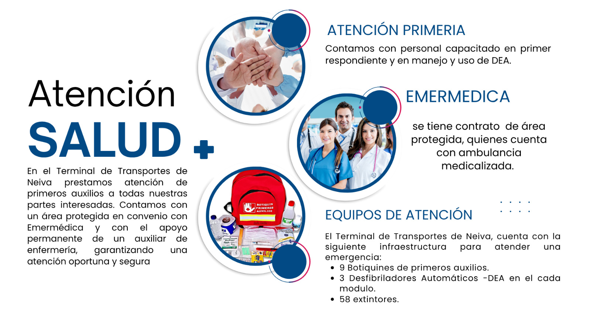
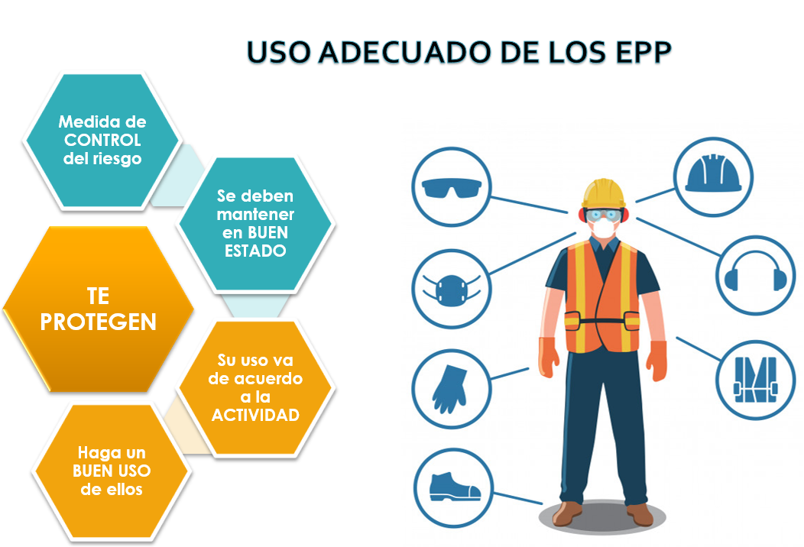

🩺 Medicina Preventiva y del Trabajo
Orientada por acciones de salud, se basa en la prevención y control de factores causantes de enfermedad común y ocupacional.
Subprogramas
- 🧪 Exámenes y Evaluaciones Médicas
- 💉 Jornadas de Vacunación
- 🏃♀️ Capacitaciones en Estilos de Vida Saludable
- 📊 Sistemas de Vigilancia Epidemiológica: Ergonómico, Auditivo y Biológico
🦺 Seguridad Industrial
Para factores de riesgo causantes de accidentes de trabajo:
- Inspecciones e Investigaciones
- Orden y Aseo
- Procedimientos Operativos por Tareas Críticas
- Planes de emergencia
- Mantenimiento (Equipos y Maquinaria)
- Hojas de Seguridad
🧴 Higiene Industrial
Para factores de riesgo causantes de Enfermedad Laboral:
Subprogramas
- Mediciones Ambientales y Ocupacionales
- Ruido
- Iluminación
- Ergonómicas

⚠️ Factores de Riesgo Laboral
Los siguientes factores de riesgo aplican de manera general a todos los cargos de la empresa, incluyendo personal administrativo, operativo, de mantenimiento y de servicios generales.
- CONDICIONES DE SEGURIDAD (LOCATIVAS): Riesgo de caídas a distinto o mismo nivel (escaleras, sillas, superficies irregulares) y condiciones del entorno físico de trabajo.
- PSICOSOCIALES: Factores derivados de la organización y carga laboral, tales como trabajo repetitivo, monotonía, altos ritmos de trabajo, turnos, sobretiempos, responsabilidades y relaciones interpersonales.
- BIOMECÁNICOS: Posturas prolongadas o inadecuadas, levantamiento y transporte de cargas, movimientos manuales con esfuerzo o fuera del ángulo de confort.
- FÍSICOS: Exposición a ruido, variaciones de temperatura, iluminación inadecuada o vibraciones.
- QUÍMICOS: Contacto o exposición a aerosoles sólidos (polvos orgánicos o inorgánicos, humos, fibras), gases o vapores presentes en el entorno laboral.
- BIOLÓGICOS: Exposición a microorganismos (bacterias, virus, hongos) derivados de las condiciones del trabajo o del ambiente.
- ELÉCTRICOS: Riesgo de contacto con instalaciones o equipos eléctricos, especialmente en áreas de mantenimiento o servicio técnico.
- MECÁNICOS: Uso o manipulación de máquinas, herramientas o equipos con partes móviles o cortantes.
- RIESGO CRÍTICO: Actividades que implican tránsito vehicular o trabajos en altura.
- RIESGO PÚBLICO: Situaciones externas de delincuencia o desorden público durante desplazamientos o actividades laborales.
🧾Responsabilidades del Trabajador Según la Normatividad Legal Vigente
- Procurar el cuidado integral de su salud atendiendo las recomendaciones y/o restricciones emitidas por el médico evaluador tanto en el ámbito intralaboral como en el extralaboral.
- Suministrar información clara, veraz y completa sobre su estado de salud, paraclínicos, historias clínicas, recomendaciones o restricciones médicas, y los diagnósticos de las patologías que presente al momento de la realización de las evaluaciones médicas ocupacionales.
- Cumplir las normas, reglamentos e instrucciones del Sistema de Gestión de la Seguridad y Salud en el Trabajo de la empresa, incluyendo el uso correcto de los elementos de protección personal que su trabajo amerite.
- Informar oportunamente al empleador o contratante y al comité paritario de seguridad acerca de los peligros y riesgos latentes en su sitio de trabajo.
- Asistir a las evaluaciones médicas ocupacionales programadas por el empleador dentro de la jornada laboral establecida; su incumplimiento acarreará sanciones de abuso del derecho conforme a la normatividad vigente.
- Participar en las pausas activas durante la jornada laboral, programadas por el empleador en mejora de la salud física y mental, e informar al empleador objeciones de conciencia, credos, limitaciones en su estado de salud, posturas culturales o políticas que afecten la realización de las pausas.
- Acatar las recomendaciones médico-laborales emitidas por el médico especialista en medicina del trabajo, salud ocupacional o seguridad y salud en el trabajo, tanto en el ámbito laboral como extralaboral.
- Participar en las actividades de identificación de riesgos y prevención del consumo y/o trastornos mentales.
- Participar en las estrategias para la prevención de problemas y/o trastornos mentales.
- Participar en las actividades de capacitación en seguridad y salud en el trabajo definidas en el plan de capacitación del SGI.
- Participar y contribuir al cumplimiento de los objetivos del SGI.
- Administrar, gestionar y ajustar los procedimientos, protocolos, procesos y demás documentos que involucren el área.
- Cumplir las normas, reglamentos e instrucciones del Sistema de Gestión de la Seguridad y Salud en el Trabajo de la empresa y las demás establecidas en el Decreto 1072 de 2015 y normas que lo modifiquen, sustituyan o adicionen.
🚦 Funciones y responsabilidades en Seguridad Vial
- Reportar siniestros viales en desplazamientos laborales.
- Participar en las capacitaciones de seguridad vial.
- Cumplir la legislación y los lineamientos de seguridad vial de la organización.
👥 Comité Paritario de Seguridad y Salud en el Trabajo (COPASST)
El COPASST es un organismo de promoción y vigilancia de las normas y reglamentos sobre seguridad y salud en el trabajo. Su objetivo es fomentar la participación de todos los trabajadores en la prevención de riesgos laborales.
¿Qué es?
Es un comité paritario, lo que significa que está conformado por partes iguales entre representantes de los empleadores y de los trabajadores.
¿Qué hace?
- Investiga incidentes y accidentes de trabajo.
- Realiza inspecciones de equipos, procesos e instalaciones.
- Intermedia en temas relacionados con la medicina preventiva y del trabajo.
- Propone medidas para la mejora continua de la seguridad y salud laboral.
🤝 Comité de Convivencia Laboral
¿Qué es?
Es un grupo de vigilancia cuya finalidad es contribuir a proteger a los trabajadores contra los riesgos psicosociales que puedan afectar la salud.
¿Qué objetivo persigue?
- Promover un excelente ambiente de convivencia laboral.
- Fomentar relaciones positivas entre los trabajadores de la empresa.
- Respaldar la dignidad e integridad de las personas en el trabajo.
¿Quiénes lo conforman?
Representantes de empleadores y empleados por igual.
⚖️ Acoso Laboral
LEY 1010 DE 2006: Acoso Laboral
Objeto
Definir, prevenir, corregir y sancionar las diversas formas de agresión, maltrato, vejámenes, trato desconsiderado y ofensivo, y en general todo ultraje a la dignidad humana que se ejercen sobre quienes realizan sus actividades en el contexto de una relación laboral privada o pública.
Toda conducta persistente y demostrable, ejercida sobre un empleado por parte de un empleador, jefe, superior jerárquico, compañero o subalterno, encaminada a infundir miedo, intimidación, terror o angustia; causar perjuicio laboral; generar desmotivación en el trabajo; o inducir la renuncia del mismo.
Modalidades
- Maltrato laboral: violencia física o verbal.
- Persecución laboral: actos reiterados o arbitrarios.
- Discriminación laboral: todo trato diferenciado por razones de raza, género, edad, origen familiar o nacional, discapacidad, credo religioso, preferencia política o situación social que carezca de toda razonabilidad desde el punto de vista laboral.
- Inequidad laboral: diferencias en funciones o remuneración.
- Entorpecimiento laboral: obstaculizar el desarrollo del trabajo.
- Desprotección laboral: impartir órdenes no adecuadas.
- Actos de irrespeto a la dignidad humana: comportamientos contrarios a la disciplina o subordinación laboral, al desempeño del trabajo, a la seguridad o a la salud ocupacional.
Ámbito de Aplicación
Se aplica a: Trabajadores del sector privado y público.
No aplica a: Relaciones civiles o comerciales derivadas de contratos de prestación de servicios sin relación de jerarquía o subordinación, ni a contratación administrativa.
🧤 Uso Adecuado de los Elementos de Protección Personal (EPP)
Recuerda utilizar correctamente los elementos de protección personal para prevenir accidentes y enfermedades laborales.

🧘♀️ Pausas Activas en la Jornada Laboral
Las pausas activas son breves descansos que se realizan durante la jornada laboral para promover la salud física y mental, reducir el estrés y prevenir enfermedades musculoesqueléticas.
- Ayudan a mejorar la concentración y el estado de ánimo.
- Previenen lesiones por esfuerzo repetitivo.
- Reducen la fatiga visual y mental.
- Favorecen la circulación y la postura.
📘 Puedes descargar el instructivo completo aquí:
⬇️ Descargar Instructivo de Pausas Activas